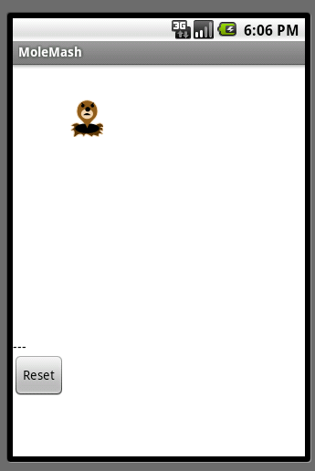
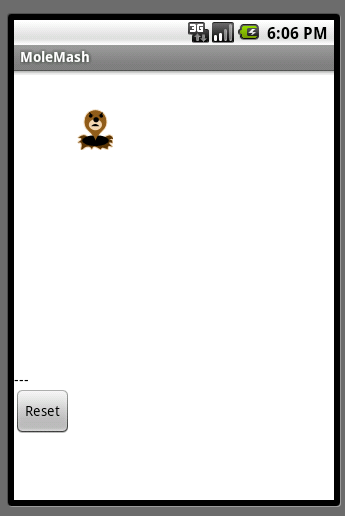
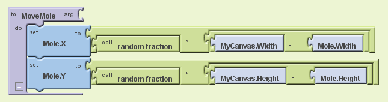
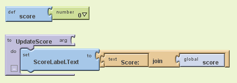

MoleMash
What You're Building
Download Book Chapter 

In the game MoleMash, a mole pops up at random positions on a playing field, and the player scores points by hitting the mole before it jumps away. This tutorial shows how to build MoleMash as an example of a simple game that uses animation.
The tutorial assumes that you have completed the HelloPurr and PaintPot tutorials.Getting Started
Connect to the App Inventor web site and start a new project. Name it MoleMash, and also set the screen's Title to MoleMash. Open the Blocks Editor and connect to the phone.
Also download this picture of a mole and save it on your computer.{kind=link}
Introduction
You'll design the game so that the mole moves once every half-second. If it is touched, the score increases by one, and the phone vibrates. Pressing restart resets the score to zero.
This tutorial introduces:
- image sprites
- timers and the Clock component
- procedures
- picking random numbers between 0 and 1
- text blocks
- typeblocking
The first components
Several components should be familiar from previous tutorials:
- A Canvas named MyCanvas . This is the area where the mole moves.
- A Label named ScoreLabel that shows the score, i.e., the number of times the player has hit the mole.
- A Button named ResetButton
Timers and the Clock component
You need to arrange for the mole to jump periodically, and you'll do this with the aid of a Clock
component. The Clock component provides various operations dealing with time, like telling you what the date is. Here, you'll use the component as a timer that fires at regular internals. The firing interval is determined by the Clock 's TimerInterval property. Drag out a Clock component; it will go into the non-visible components area. Name it MoleTimer . Set its TimeInterval to 500 milliseconds to make the mole move every half second. Make sure that Enabled is checked.Adding an Image Sprite
To add the moving mole we'll use a sprite .
Sprites are images that can move on the screen within a Canvas . Each sprite has a speed and a heading, and also an interval that determines how often the sprite moves at its designated speed. Sprites can also detect when they are touched. In MoleMash , the mole has a speed zero, so it won't move by itself. Instead, you'll be setting the mole's position each time the timer fires. Drag an ImageSprite component onto the Viewer . You'll find this component in the Animation category of the Palette . Place it within MyCanvas area. Set these properties for the Mole sprite:- Picture : Use mole.png, which you downloaded to your computer at the beginning of this tutorial.
- Enabled : checked
- Interval : 500
- The interval doesn't matter here, because the mole's speed is zero: it's not moving by itself.
- Heading : 0 The heading doesn't matter here either, because the speed is 0.
- Speed : 0.0
- Visible : checked
- Width : Automatic
- Height : Automatic

Component Behavior and Event Handlers
Now you'll specify the component behavior. This introduces some new App Inventor ideas. The first is the idea of a procedure .
A procedure is a sequence of statements that you can refer to all at once as single command. If you have a sequence that you need to use more than once in a program, you can define that as a procedure, and then you don't have to repeat the sequence each time you use it. Procedures in App Inventor can take arguments and return values. This tutorial covers only the simplest case: procedures that take no arguments and return no values.Define Procedures
Define two procedures:
- MoveMole moves the Mole sprite to a new random position on the canvas.
- UpdateScore shows the score, by changing the text of the ScoreLabel
-
In the Blocks Editor, under
Built-In
, open the
Definition
drawer. Drag out a
to procedure
block and change the label
procedure
to
MoveMole
.
Note: There are two similar blocks: procedure and procedureWithResult . Here you should use procedure .
The to MoveMole block has a slot labeled do . That's where you put the statements for the procedure. In this case there will be two statements: one to set the mole's x position and one to set its y position. In each case, you'll set the position to be a random fraction, between 0 and 1, of the difference between the size of the canvas and the size of the mole. You create that value using blocks for random -fraction and multiplication and subtraction. You can find these in the Math drawer. -
Build the
MoveMole
procedure. The completed
definition should look like this:
Leave the arg socket for MoveMole empty because MoveMole does not take any arguments. Observe how the blocks connect together: The first statement uses the Mole.X gets block to set mole's horizontal position. The value plugged into the block's socket is the result of multiplying:
- the result of the call random-fraction block, which a value between 0 and 1
- the result of subtracting the mole's width from the canvas's width.
- To create the "Score: " part of the label, drag out a text block from the Text drawer. Change the block to read "Score: " rather than "text".
- Use a join block to attach this to a block that gives the value of the score variable. You can find the join block in the Text drawer.
-
Here's how
score
and
UpdateScore
should look:

Add a Timer
The next step is to make the mole keep moving. Here's where you'll use MoleTimer . Clock components have an event handler called when ... Timer that triggers repeatedly at a rate determined by the TimerInterval .
Set up MoleTimer to call MoveMole each time the timer fires, by building the event handler like this:
Notice how the mole starts jumping around on the phone as soon as you define the event handler. This is an example of how things in App Inventor start happening instantaneously, as soon as you define them.
Add a Mole Touch Handler
The program should increment the score each time the mole is touched. Sprites, like canvases, respond to touch events. So create a touch event handler for Mole that:
- Increments the score.
- Calls UpdateScore to show the new score.
- Makes the phone vibrate for 1/10 second (100 milliseconds).
- Calls MoveMole so that the mole moves right away, rather than waiting for the timer.
- To create a value block containing 100, just type 100 and press return.
- To create a MoveMole block, just type MoveMole and select the block you want from the list
Reset the Score
One final detail is resetting the score. That's simply a matter of making the Reset button change the score to 0 and calling UpdateScore .
Complete Program
Here's the complete MoleMash program:
Variations
Once you get the game working, you might want to explore some variations. For example:
- Make the game vary the speed of the mole in response to how well the player is doing. To vary how quickly the mole moves, you'll need to change the MoleTimer's Interval property.
- Keep track of when the player hits the mole and when the player misses the mole, and show a score with both hits and misses. To do this, you'll need do define touched handlers both for Mole , same as now, and for MyCanvas . One subtle issue, if the player touches the mole, does that also count as a touch for the Canvas? The answer is yes. Both touch events will register.
Review
Here are some of the ideas covered in this project:
- Sprites are touch-sensitive shapes that you can program to move around on a Canvas.
- The Clock component can be used as a time to make events that happen at regular intervals.
- Procedures are defined using to blocks.
- For each procedure you define, App Inventor automatically creates an associated call block and places it in the My Definitions drawer.
- calling random-fraction produces a number between 0 and 1
- text blocks specify literal text, similar to the way that number blocks specify literal numbers
- typeblocking is a way to create blocks quickly, by typing a block's name